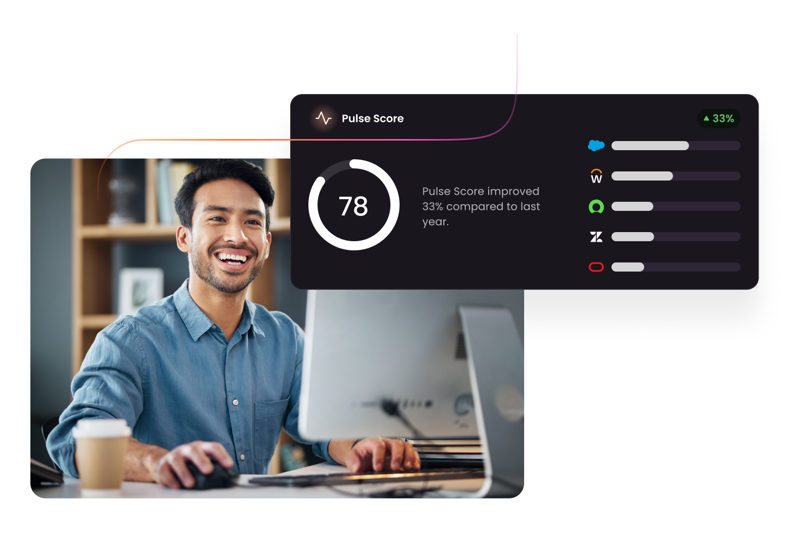

Discover What Software
You Have and What’s Actually Being Used

How Apty PULSE Works
1. INSTALL
Apty PULSE gets installed within minutes and can be added to any software application. It then silently measures user and process engagement across high-value, multi-application business processes.
2. DIAGNOSE
PULSE starts delivering insights within 2 days of installation – all focused around the health and adoption of your processes and software systems. Within 30 days, you’ll have the full diagnosis ready for review and action.
3. PRESCRIBE
PULSE pinpoints exact areas of improvement, and helps with focused prescriptions to significantly boost organizational productivity and efficiency. You’ll have granular and detailed prescriptions to address what’s working and what’s broken.